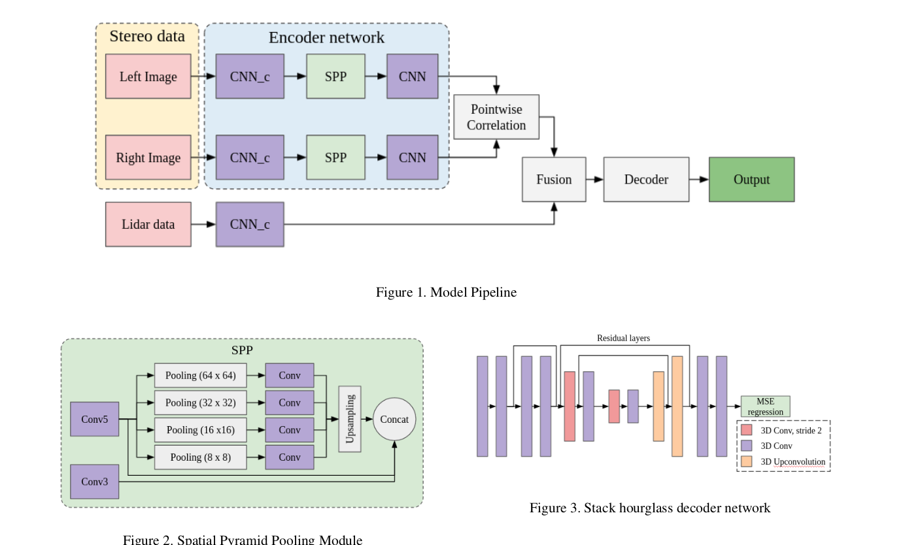
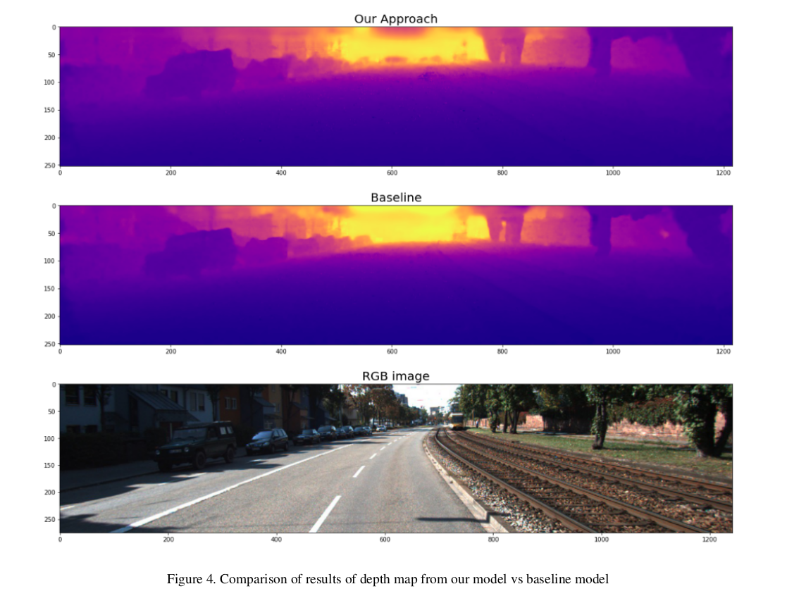

Dense Depth Maps Generation using LiDAR and Stereo Imagery
CNN
LiDAR
Stereo Vision
KITTI Dataset
NVIDIA GPU
Introduction
Autonomous vehicles and robotic vision systems require accurate 3D maps for navigation and decision-making. However, acquiring high-quality depth data is challenging due to the trade-offs between different sensor technologies. LiDAR provides highly accurate depth information but is sparse, while stereo cameras generate dense depth maps but are less accurate.
This project focuses on fusing these two sources to create dense depth maps, leveraging stereo correspondences and LiDAR data. Our approach enhances depth completion using deep learning models, improving the reliability of depth estimation in autonomous navigation.
Why is This Project Important?
- Autonomous Vehicles: Enhancing depth perception improves safety and navigation.
- Augmented Reality (AR) & Virtual Reality (VR): Accurate depth data aids in realistic object placement.
- 3D Mapping & Robotics: Dense maps contribute to spatial understanding for robotic applications.
- Cost Efficiency: High-resolution LiDARs are expensive. Fusing stereo and low-resolution LiDAR data provides a cost-effective solution.
Dataset Used
This project leverages two publicly available datasets:
- KITTI Depth Selection Dataset: Contains stereo images and LiDAR point clouds from various road environments, with 42,949 training samples and 1,000 validation samples.
- KITTI Stereo Dataset: Includes 194 training and 195 testing stereo image pairs with sparse LiDAR depth information.
Methodology
1. Baseline Model
We initially attempted an existing model using guided convolutions for depth completion. However, due to computational constraints and implementation challenges, we pivoted towards a more efficient architecture.
2. Proposed Approach
Instead of relying solely on RGB-LiDAR fusion, our model incorporates stereo disparity into the learning pipeline. The methodology involves:
- Stereo Image Encoding: Two CNN-based encoders extract features from left and right stereo images.
- Spatial Pyramid Pooling (SPP): Captures multi-scale contextual information to refine depth estimation.
- Cost Volume Calculation: Generates disparity maps from stereo image features.
- LiDAR Feature Extraction: A separate CNN encoder processes sparse LiDAR depth information.
- Fusion Module: Combines disparity-based depth estimation with LiDAR data for enhanced accuracy.
- Stacked Hourglass Decoder: Upsamples the fused depth map to match the original resolution.

3. Loss Function
The model is trained using a combination of:
- Mean Squared Error (MSE): Evaluates depth prediction accuracy.
- Smoothness Loss: Encourages spatial consistency in depth maps.
Implementation Details
- The model is trained end-to-end using Adam optimizer with a learning rate of 0.001.
- Pre-trained encoder weights were fine-tuned using the KITTI dataset.
- Training was performed on 4 video sequences due to time constraints.
(Sample Depth Map Output)
Results & Evaluation
The model's performance was evaluated using standard depth completion metrics:
| Metric |
Ours |
Baseline |
| RMSE |
1548.89 |
792.80 |
| MAE |
493.65 |
225.81 |
| iRMSE |
5.01 |
2.42 |
| iMAE |
1.86 |
0.99 |
While our model produces consistent depth maps, it underperforms compared to state-of-the-art approaches, likely due to limited training data.

Challenges & Future Work
Challenges Faced:
- Limited training time due to computational constraints.
- Stereo depth estimation is sensitive to occlusions and textureless regions.
- Integrating stereo and LiDAR features optimally requires further tuning.
Future Improvements:
- End-to-End Training: Train the full model rather than separate components.
- Larger Dataset: Incorporate datasets like SceneFlow to improve generalization.
- Dilated Convolutions: Experiment with receptive field expansion for better depth refinement.
Conclusion
This project demonstrates the feasibility of fusing stereo disparity with LiDAR data for depth map generation. While preliminary results show promise, further training and optimization can enhance its performance. Future work aims to refine the model for industrial and real-world applications, such as autonomous driving and robotic navigation.